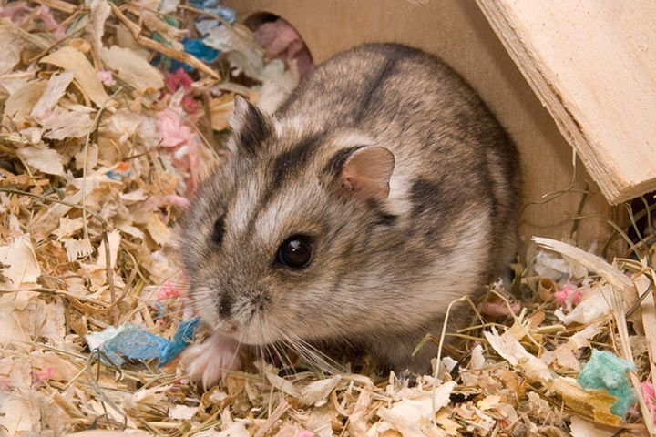

hammy poppular
สายพันธุ์ของแฮมเตอร์!

1.แฮมสเตอร์ไจแอนท์ (Syrian Hamster)
แฮมสเตอร์ไจแอนท์เป็นสายพันธุ์ที่ดีที่สุดสำหรับเลี้ยง เลี้ยงง่ายและเชื่องช้าที่สุดในบรรดาแฮมสเตอร์ยอดนิยม และมีโอกาสกัดน้อยที่สุด แฮมสเตอร์ไจแอนท์มีนิสัยชอบออกหากินเวลากลางคืนและไม่ค่อยเคลื่อนไหวในระหว่างวัน ดังนั้นจึงควรเล่นกับพวกมันในตอนเย็นหรือตอนกลางคืนเท่านั้น
นิสัยแฮมสเตอร์ไจแอนท์: เลี้ยงง่ายเชื่องที่สุด เป็นมิตรและอ่อนน้อม โดดเดี่ยว!
2.หนูแฮมเตอร์วินเทอร์ไวท์ ( Winter White Hamster)
หนูแฮมเตอร์วินเทอร์ไวท์กลมและหน้าสั้นกว่าสายพันธุ์แคมป์เบล ขนของหนูแฮมเตอร์วินเทอร์ไวท์สามารถเปลี่ยนเป็นสีขาวในฤดูหนาว ฤดูหนาว หนูแฮมเตอร์วินเทอร์ไวท์เชื่องมากและมีโอกาสน้อยที่จะกัดกว่าหนูแฮมสเตอร์สายพันธุ์อื่นๆ หนูแฮมเตอร์วินเทอร์ไวท์มีความว่องไวและคล่องตัว
นิสัยหนูแฮมเตอร์วินเทอร์ไวท์: ชอบเข้าสังคม ขี้เล่นและกระตือรือร้น!
3.หนูแคมเบล (Campbell Dwarft Hamster)
หนูแคมเบลมีรูปร่างที่กลมและมีขนาดเล็กน่ารัก เป็นอีกหนึ่งสายพันธุ์ ที่สามารถเลี้ยงไว้เป็นกลุ่มเพศเดียวกันได้มีอาณาเขตน้อยกว่าหนูแฮมสเตอร์สายพันธุ์อื่นๆ นอกจากนี้ ควรเตรียมบ้านหนูแฮมสเตอร์สำรองแยกต่างหาก เนื่องจากหนูแคมเบลมีแนวโน้มหวงอาณาเขตเมื่ออายุมากขึ้น หนูแคมเบลอาจตื่นขึ้นในช่วงเวลาสั้นๆ ตลอดทั้งวัน
นิสัยหนูแคมเบล: ไม่ค่อยเข้าสังคมกับมนุษย์ ตกใจง่าย จะกัดเมื่อรู้สึกประหม่า ขี้เล่นและกระตือรือร้น!
4.หนูแฮมเตอร์โรโบรอฟสกี้ (Roborovski Hamster)
หนูแฮมเตอร์โรโบรอฟสกี้เป็นหนูแฮมสเตอร์ที่ตัวเล็กที่สุดและอายุยืนที่สุดใน 5 สายพันธุ์ โรโบรอฟสกี้มีอารมณ์คล้ายกับวินเทอร์ไวท์ ค่อนข้างชอบที่จะเข้าสังคมกับเพื่อนแฮมสเตอร์และเจ้าของ เนื่องจากพวกมันมีแนวโน้มที่จะพัฒนาพฤติกรรมในสร้างอาณาเขตเมื่ออายุมากขึ้น ควรเตรียมกรงสำรองไว้ให้พร้อมเสมอ นอกจากนี้ หนูแฮมเตอร์โรโบรอฟสกี้เป็นสายพันธุ์ที่คล่องแคล่วและชอบที่จะกระตือรือร้น อย่าลืมเตรียม ของเล่นให้หนูแฮมสเตอร์เหล่านี้ หากคุณต้องการเลี้ยงแฮมสเตอร์หลายตัวโรโบรอฟสกี้ป็นตัวเลือกที่ดี
นิสัยหนูแฮมเตอร์โรโบรอฟสกี้ โรโบรอฟสกี้ขี้อายมาก เข้าสังคมกับแฮมสเตอร์ตัวอื่นได้ หวงสิ่งของ

5.ไชนีสแฮมสเตอร์ (Chinese Hamster)
ไชนีสแฮมสเตอร์ขึ้นชื่อเรื่องรูปร่างเนื่องจากมีรูปร่างที่เรียวและยาว ถือเป็นเอกลักษณ์ของไชนีสแฮมสเตอร์ และเมื่อพวกมันเชื่องแล้วไชนีสแฮมสเตอร์จะสามารถเข้าสังคมและผูกผันกับเจ้าของเป็นอย่างมาก สายพันธุ์นี้ขึ้นชื่อว่าเป็นมิตร หากไชนีสแฮมสเตอร์ไม่คุ้นเคยหรือรู้สึกประหม่าอาจจะกัดได้ ไชนีสแฮมสเตอร์มีขนาดเล็กและรวดเร็วและสามารถดิ้นออกจากมือของคุณได้อย่างง่ายดาย สามารถเก็บไว้ในกลุ่มหรือคู่เพศเดียวกันได้
นิสัยไชนีสแฮมสเตอร์ เป็นมิตรและผูกผันกับเจ้าของ ขี้อาย